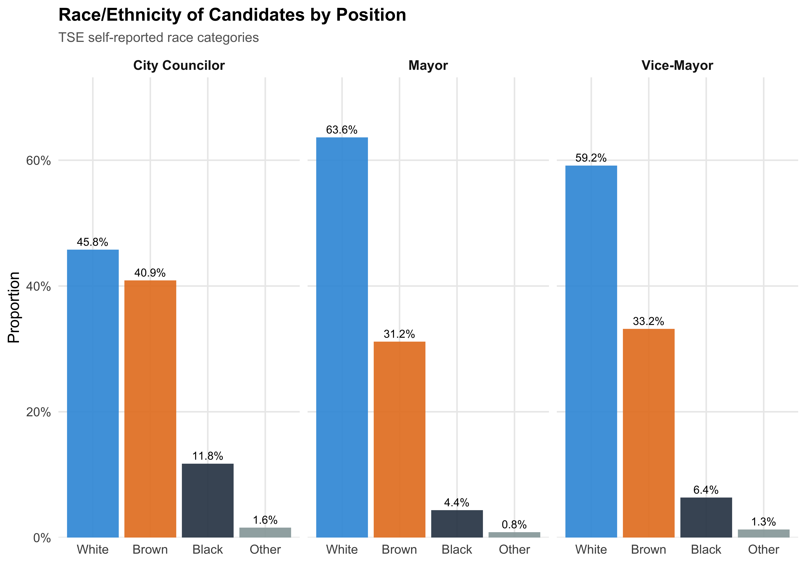
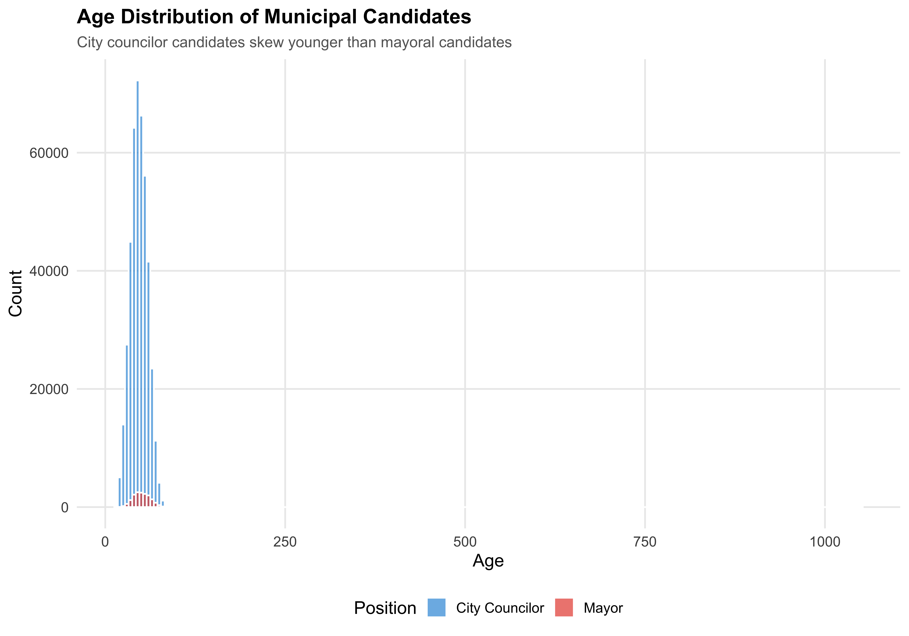
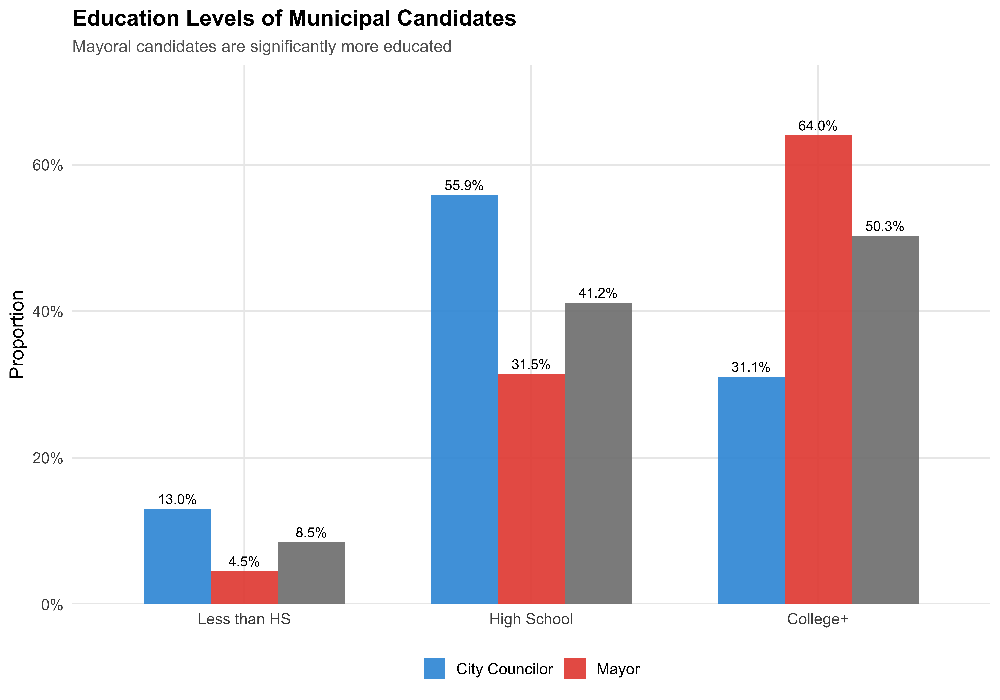
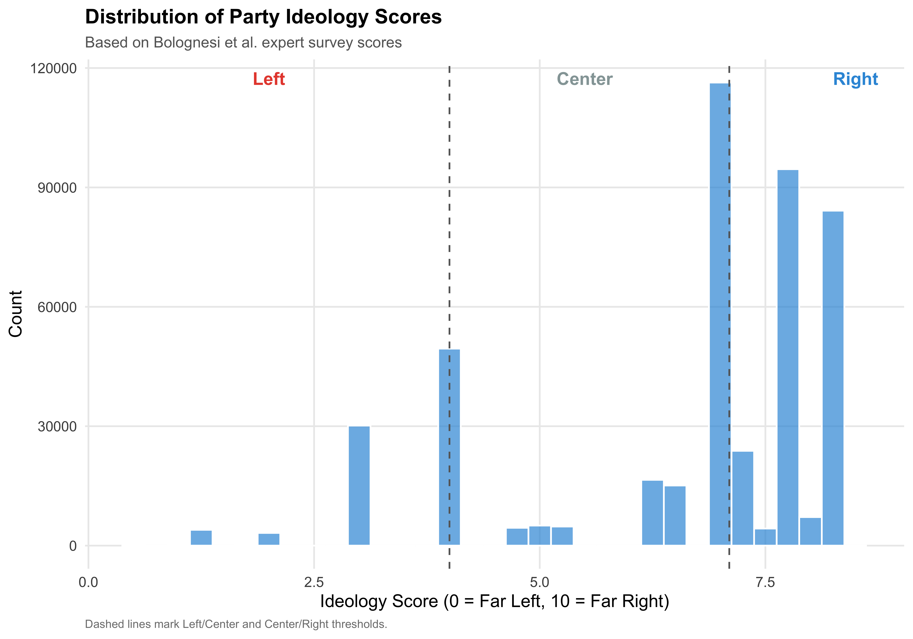
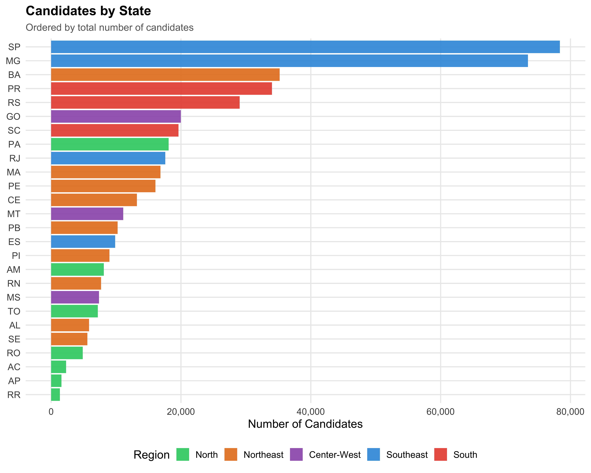

Show code
source(here::here("code", "00_setup.R"))
df <- readRDS(paths$analysis_full_rds)
df <- df %>%
mutate(ideology_category = factor(ideology_category, levels = ideology_levels))Who Runs for Municipal Office in Brazil in 2024?
Before we can understand LGBTQ+ candidates, we need to understand the universe they inhabit. Brazil’s 2024 municipal elections saw candidates competing for city council seats (vereadores) and mayoral positions (prefeitos) across 5,570 municipalities — from megacities like São Paulo (12M population) to towns with fewer than 1,000 residents.
This chapter provides a baseline portrait of all 463,601 candidates.
The table below shows how candidates are distributed between the two types of municipal office: city council (vereador/a) and mayor (prefeito/a).
| Position | N | % |
|---|---|---|
| City Councilor | 432005 | 93.2% |
| Mayor | 15676 | 3.4% |
| Vice-Mayor | 15920 | 3.4% |
The overwhelming majority are city councilor candidates. This reflects Brazil’s institutional structure: each municipality has one mayor but many council seats (ranging from 9 in small towns to 55 in the largest cities).
The integrated dataset does not contain disaggregated candidacy status information (all rows share a single code). Candidacy filtering was performed upstream during data integration.
Gender is recorded on TSE registration forms using the categories Feminino (Female) and Masculino (Male). The table below shows the gender distribution separately by position type.
| Position | Gender | N | % |
|---|---|---|---|
| City Councilor | Female | 152949 | 35.4% |
| City Councilor | Male | 279017 | 64.6% |
| City Councilor | Undisclosed | 39 | 0.0% |
| Mayor | Female | 2396 | 15.3% |
| Mayor | Male | 13277 | 84.7% |
| Mayor | Undisclosed | 3 | 0.0% |
| Vice-Mayor | Female | 3718 | 23.4% |
| Vice-Mayor | Male | 12199 | 76.6% |
| Vice-Mayor | Undisclosed | 3 | 0.0% |
Despite mandatory gender quotas requiring parties to field at least 30% women candidates for proportional races (city council), women remain underrepresented — particularly in executive positions (mayor races).
Race/ethnicity is self-reported by candidates on TSE registration forms, using Brazil’s official census categories (Branca, Parda, Preta, Amarela, Indigena). We translate these as White, Brown, Black, Asian, and Indigenous, respectively, and group the latter two plus unreported cases as “Other” for analytical simplicity.
| Race | N | % |
|---|---|---|
| White | 217171 | 46.8% |
| Brown | 186781 | 40.3% |
| Black | 52468 | 11.3% |
| Not Reported | 2763 | 0.6% |
| Indigenous | 2578 | 0.6% |
| Asian | 1795 | 0.4% |
| Undisclosed | 45 | 0.0% |
df %>%
filter(!is.na(race_simple)) %>%
count(position_simple, race_simple) %>%
group_by(position_simple) %>%
mutate(pct = n / sum(n)) %>%
ggplot(aes(x = race_simple, y = pct, fill = race_simple)) +
geom_col(alpha = 0.9, show.legend = FALSE) +
geom_text(aes(label = format_pct(pct)), vjust = -0.5, size = 3.5) +
scale_y_continuous(labels = percent, expand = expansion(mult = c(0, 0.15))) +
scale_fill_manual(values = pal_race) +
facet_wrap(~position_simple) +
labs(x = NULL, y = "Proportion",
title = "Race/Ethnicity of Candidates by Position",
subtitle = "TSE self-reported race categories")
save_figure(last_plot(), "01_race_by_position")
Age is calculated from the candidate’s date of birth as of election day (October 2024). The table reports summary statistics by position type.
| Position | N | Mean | SD | Median | Min | Max |
|---|---|---|---|---|---|---|
| City Councilor | 431963 | 47.0 | 11.5 | 47 | 17 | 96 |
| Mayor | 15673 | 50.7 | 11.3 | 50 | 21 | 96 |
| Vice-Mayor | 15917 | 50.5 | 11.7 | 50 | 19 | 92 |
df %>%
filter(!is.na(age), position_simple %in% c("City Councilor", "Mayor")) %>%
ggplot(aes(x = age, fill = position_simple)) +
geom_histogram(binwidth = 5, alpha = 0.7, position = "identity", color = "white") +
scale_fill_manual(values = c("City Councilor" = "#3498DB", "Mayor" = "#E74C3C"),
name = "Position") +
labs(x = "Age", y = "Count",
title = "Age Distribution of Municipal Candidates",
subtitle = "City councilor candidates skew younger than mayoral candidates")
save_figure(last_plot(), "01_age_distribution")
Education level is self-declared on TSE registration forms. We simplify the original 8 TSE categories into three groups: Less than High School (illiterate through incomplete middle school), High School (complete middle school through complete high school), and College+ (incomplete or complete higher education).
| Position | Education | N | % |
|---|---|---|---|
| City Councilor | Less than HS | 56252 | 13.0% |
| City Councilor | High School | 241400 | 55.9% |
| City Councilor | College+ | 134314 | 31.1% |
| Mayor | Less than HS | 710 | 4.5% |
| Mayor | High School | 4930 | 31.5% |
| Mayor | College+ | 10033 | 64.0% |
| Vice-Mayor | Less than HS | 1353 | 8.5% |
| Vice-Mayor | High School | 6557 | 41.2% |
| Vice-Mayor | College+ | 8007 | 50.3% |
df %>%
filter(!is.na(education_simple)) %>%
count(position_simple, education_simple) %>%
group_by(position_simple) %>%
mutate(pct = n / sum(n)) %>%
ggplot(aes(x = education_simple, y = pct, fill = position_simple)) +
geom_col(position = "dodge", alpha = 0.9, width = 0.7) +
geom_text(aes(label = format_pct(pct)),
position = position_dodge(width = 0.7), vjust = -0.5, size = 3.5) +
scale_y_continuous(labels = percent, expand = expansion(mult = c(0, 0.15))) +
scale_fill_manual(values = c("City Councilor" = "#3498DB", "Mayor" = "#E74C3C"),
name = NULL) +
labs(x = NULL, y = "Proportion",
title = "Education Levels of Municipal Candidates",
subtitle = "Mayoral candidates are significantly more educated")
save_figure(last_plot(), "01_education_by_position")
Party affiliation is recorded on TSE registration forms. Brazil has a large and fragmented party system; the table below lists the 20 largest parties by number of municipal candidates.
| rank | Party | N | % of All |
|---|---|---|---|
| 1 | MDB | 44505 | 9.6% |
| 2 | PP | 39920 | 8.6% |
| 3 | PSD | 38944 | 8.4% |
| 4 | UNIÃO | 36623 | 7.9% |
| 5 | PL | 36074 | 7.8% |
| 6 | REPUBLICANOS | 34040 | 7.3% |
| 7 | PT | 30150 | 6.5% |
| 8 | PSB | 26560 | 5.7% |
| 9 | PODE | 23816 | 5.1% |
| 10 | PDT | 22937 | 4.9% |
| 11 | PSDB | 22104 | 4.8% |
| 12 | PRD | 17096 | 3.7% |
| 13 | AVANTE | 16527 | 3.6% |
| 14 | SOLIDARIEDADE | 15105 | 3.3% |
| 15 | NOVO | 7615 | 1.6% |
| 16 | AGIR | 7375 | 1.6% |
| 17 | DC | 7172 | 1.5% |
| 18 | MOBILIZA | 6628 | 1.4% |
| 19 | CIDADANIA | 5038 | 1.1% |
| 20 | PV | 4796 | 1.0% |
Party ideology scores are drawn from Bolognesi et al.’s expert survey, which rates each party on a 0–10 left-right scale. We classify scores below 4.0 as Left, 4.0–7.1 as Center, and above 7.1 as Right. Each candidate inherits the ideology score and category of their party.
| Ideology | N | % |
|---|---|---|
| Left | 60730 | 13.1% |
| Center | 166746 | 36.0% |
| Right | 236125 | 50.9% |
df %>%
filter(!is.na(ideology_score)) %>%
ggplot(aes(x = ideology_score)) +
geom_histogram(binwidth = 0.25, fill = "#3498DB", alpha = 0.7, color = "white") +
geom_vline(xintercept = c(4, 7.1), linetype = "dashed", color = "gray40") +
annotate("text", x = 2, y = Inf, label = "Left", vjust = 2, color = "#E74C3C", fontface = "bold") +
annotate("text", x = 5.5, y = Inf, label = "Center", vjust = 2, color = "#95A5A6", fontface = "bold") +
annotate("text", x = 8.5, y = Inf, label = "Right", vjust = 2, color = "#3498DB", fontface = "bold") +
labs(x = "Ideology Score (0 = Far Left, 10 = Far Right)", y = "Count",
title = "Distribution of Party Ideology Scores",
subtitle = "Based on Bolognesi et al. expert survey scores",
caption = "Dashed lines mark Left/Center and Center/Right thresholds.")
save_figure(last_plot(), "01_ideology_distribution")
Brazil’s 27 states are grouped into five macro-regions: North, Northeast, Center-West, Southeast, and South. The table below shows the distribution of candidates across regions.
| Region | N | % |
|---|---|---|
| North | 43535 | 9.4% |
| Northeast | 119664 | 25.8% |
| Center-West | 38455 | 8.3% |
| Southeast | 179266 | 38.7% |
| South | 82681 | 17.8% |
df %>%
filter(!is.na(region)) %>%
count(state_abbrev, region, sort = TRUE) %>%
ggplot(aes(x = reorder(state_abbrev, n), y = n, fill = region)) +
geom_col(alpha = 0.9) +
coord_flip() +
scale_fill_manual(values = pal_region, name = "Region") +
scale_y_continuous(labels = comma) +
labs(x = NULL, y = "Number of Candidates",
title = "Candidates by State",
subtitle = "Ordered by total number of candidates")
save_figure(last_plot(), "01_candidates_by_state")
Election rate is the proportion of candidates who won their race (elected = 1). This includes candidates elected outright (‘ELEITO’) and those elected by average (‘ELEITO POR MEDIA’) in the proportional system. Note that election rates differ sharply by position: city council races have many seats per municipality, while mayoral races have only one winner.
| Position | N | Elected | Election Rate |
|---|---|---|---|
| City Councilor | 408469 | 57433 | 14.1% |
| Mayor | 15053 | 5470 | 36.3% |
| Vice-Mayor | 15059 | 5470 | 36.3% |
The table below disaggregates election rates among city councilor candidates by gender, race, education, and party ideology. These baseline rates provide context for evaluating LGBTQ+ candidate outcomes in subsequent chapters.
councilors <- df %>% filter(position_simple == "City Councilor", !is.na(elected))
bind_rows(
# Gender
councilors %>%
mutate(gender_en = translate_gender(gender)) %>%
group_by(group = gender_en) %>%
summarise(n = n(), rate = mean(elected), .groups = "drop") %>%
mutate(dimension = "Gender"),
# Race
councilors %>%
filter(!is.na(race_simple)) %>%
group_by(group = race_simple) %>%
summarise(n = n(), rate = mean(elected), .groups = "drop") %>%
mutate(dimension = "Race"),
# Education
councilors %>%
filter(!is.na(education_simple)) %>%
group_by(group = education_simple) %>%
summarise(n = n(), rate = mean(elected), .groups = "drop") %>%
mutate(dimension = "Education"),
# Ideology
councilors %>%
filter(!is.na(ideology_category)) %>%
group_by(group = ideology_category) %>%
summarise(n = n(), rate = mean(elected), .groups = "drop") %>%
mutate(dimension = "Ideology")
) %>%
mutate(rate = format_pct(rate), n = format_n(n)) %>%
select(Dimension = dimension, Group = group, N = n, `Election Rate` = rate) %>%
kable(align = c("l", "l", "r", "r"))| Dimension | Group | N | Election Rate |
|---|---|---|---|
| Gender | Female | 144,292 | 7.3% |
| Gender | Male | 264,176 | 17.8% |
| Gender | Undisclosed | 1 | 0.0% |
| Race | White | 188,829 | 16.1% |
| Race | Brown | 165,676 | 13.4% |
| Race | Black | 47,567 | 8.3% |
| Race | Other | 6,396 | 12.1% |
| Education | Less than HS | 52,807 | 10.6% |
| Education | High School | 228,404 | 12.9% |
| Education | College+ | 127,257 | 17.6% |
| Ideology | Left | 52,405 | 11.4% |
| Ideology | Center | 146,845 | 15.2% |
| Ideology | Right | 209,219 | 14.0% |
This chapter establishes the baseline portrait of Brazil’s 2024 municipal candidate pool, documenting the distribution of candidates across demographic, partisan, and geographic dimensions. These patterns serve as the reference point for all subsequent comparisons.
With this baseline in hand, the next chapter asks: How do LGBTQ+ candidates differ from this picture?
---
title: "1. The Candidate Universe"
subtitle: "Who Runs for Municipal Office in Brazil in 2024?"
---
```{r setup}
source(here::here("code", "00_setup.R"))
df <- readRDS(paths$analysis_full_rds)
df <- df %>%
mutate(ideology_category = factor(ideology_category, levels = ideology_levels))
```
# Overview
Before we can understand LGBTQ+ candidates, we need to understand the universe they inhabit. Brazil's 2024 municipal elections saw candidates competing for city council seats (*vereadores*) and mayoral positions (*prefeitos*) across 5,570 municipalities --- from megacities like São Paulo (12M population) to towns with fewer than 1,000 residents.
This chapter provides a baseline portrait of **all** `r format_n(nrow(df))` candidates.
# Sample Composition
## By Position
The table below shows how candidates are distributed between the two types of municipal office: city council (*vereador/a*) and mayor (*prefeito/a*).
```{r tbl-position}
#| label: tbl-position
#| tbl-cap: "Candidates by Position"
df %>%
count(position_simple) %>%
mutate(pct = format_pct(n / sum(n))) %>%
rename(Position = position_simple, N = n, `%` = pct) %>%
kable(align = c("l", "r", "r"))
```
The overwhelming majority are city councilor candidates. This reflects Brazil's institutional structure: each municipality has one mayor but many council seats (ranging from 9 in small towns to 55 in the largest cities).
## By Candidacy Status
::: {.callout-note}
The integrated dataset does not contain disaggregated candidacy status information (all rows share a single code). Candidacy filtering was performed upstream during data integration.
:::
# Demographics
## Gender
Gender is recorded on TSE registration forms using the categories *Feminino* (Female) and *Masculino* (Male). The table below shows the gender distribution separately by position type.
```{r tbl-gender}
#| label: tbl-gender
#| tbl-cap: "Gender Distribution by Position"
df %>%
mutate(gender_en = translate_gender(gender)) %>%
count(position_simple, gender_en) %>%
group_by(position_simple) %>%
mutate(pct = format_pct(n / sum(n))) %>%
ungroup() %>%
rename(Position = position_simple, Gender = gender_en, N = n, `%` = pct) %>%
kable(align = c("l", "l", "r", "r"))
```
Despite mandatory gender quotas requiring parties to field at least 30% women candidates for proportional races (city council), women remain underrepresented --- particularly in executive positions (mayor races).
## Race/Ethnicity
Race/ethnicity is self-reported by candidates on TSE registration forms, using Brazil's official census categories (*Branca*, *Parda*, *Preta*, *Amarela*, *Indigena*). We translate these as White, Brown, Black, Asian, and Indigenous, respectively, and group the latter two plus unreported cases as "Other" for analytical simplicity.
```{r tbl-race}
#| label: tbl-race
#| tbl-cap: "Race/Ethnicity Distribution"
df %>%
mutate(race_en = translate_race(race)) %>%
count(race_en, sort = TRUE) %>%
mutate(pct = format_pct(n / sum(n))) %>%
rename(Race = race_en, N = n, `%` = pct) %>%
kable(align = c("l", "r", "r"))
```
```{r fig-race}
#| label: fig-race
#| fig-cap: "Race Distribution by Position"
df %>%
filter(!is.na(race_simple)) %>%
count(position_simple, race_simple) %>%
group_by(position_simple) %>%
mutate(pct = n / sum(n)) %>%
ggplot(aes(x = race_simple, y = pct, fill = race_simple)) +
geom_col(alpha = 0.9, show.legend = FALSE) +
geom_text(aes(label = format_pct(pct)), vjust = -0.5, size = 3.5) +
scale_y_continuous(labels = percent, expand = expansion(mult = c(0, 0.15))) +
scale_fill_manual(values = pal_race) +
facet_wrap(~position_simple) +
labs(x = NULL, y = "Proportion",
title = "Race/Ethnicity of Candidates by Position",
subtitle = "TSE self-reported race categories")
save_figure(last_plot(), "01_race_by_position")
```
## Age
Age is calculated from the candidate's date of birth as of election day (October 2024). The table reports summary statistics by position type.
```{r tbl-age}
#| label: tbl-age
#| tbl-cap: "Age Distribution Summary"
df %>%
filter(!is.na(age)) %>%
group_by(position_simple) %>%
summarise(
N = n(),
Mean = round(mean(age), 1),
SD = round(sd(age), 1),
Median = median(age),
Min = min(age),
Max = max(age),
.groups = "drop"
) %>%
rename(Position = position_simple) %>%
kable(align = c("l", rep("r", 6)))
```
```{r fig-age}
#| label: fig-age
#| fig-cap: "Age Distribution by Position"
df %>%
filter(!is.na(age), position_simple %in% c("City Councilor", "Mayor")) %>%
ggplot(aes(x = age, fill = position_simple)) +
geom_histogram(binwidth = 5, alpha = 0.7, position = "identity", color = "white") +
scale_fill_manual(values = c("City Councilor" = "#3498DB", "Mayor" = "#E74C3C"),
name = "Position") +
labs(x = "Age", y = "Count",
title = "Age Distribution of Municipal Candidates",
subtitle = "City councilor candidates skew younger than mayoral candidates")
save_figure(last_plot(), "01_age_distribution")
```
## Education
Education level is self-declared on TSE registration forms. We simplify the original 8 TSE categories into three groups: Less than High School (illiterate through incomplete middle school), High School (complete middle school through complete high school), and College+ (incomplete or complete higher education).
```{r tbl-education}
#| label: tbl-education
#| tbl-cap: "Education Level Distribution"
df %>%
filter(!is.na(education_simple)) %>%
count(position_simple, education_simple) %>%
group_by(position_simple) %>%
mutate(pct = format_pct(n / sum(n))) %>%
ungroup() %>%
rename(Position = position_simple, Education = education_simple, N = n, `%` = pct) %>%
kable(align = c("l", "l", "r", "r"))
```
```{r fig-education}
#| label: fig-education
#| fig-cap: "Education Distribution by Position"
df %>%
filter(!is.na(education_simple)) %>%
count(position_simple, education_simple) %>%
group_by(position_simple) %>%
mutate(pct = n / sum(n)) %>%
ggplot(aes(x = education_simple, y = pct, fill = position_simple)) +
geom_col(position = "dodge", alpha = 0.9, width = 0.7) +
geom_text(aes(label = format_pct(pct)),
position = position_dodge(width = 0.7), vjust = -0.5, size = 3.5) +
scale_y_continuous(labels = percent, expand = expansion(mult = c(0, 0.15))) +
scale_fill_manual(values = c("City Councilor" = "#3498DB", "Mayor" = "#E74C3C"),
name = NULL) +
labs(x = NULL, y = "Proportion",
title = "Education Levels of Municipal Candidates",
subtitle = "Mayoral candidates are significantly more educated")
save_figure(last_plot(), "01_education_by_position")
```
# Party and Ideology
## Top Parties
Party affiliation is recorded on TSE registration forms. Brazil has a large and fragmented party system; the table below lists the 20 largest parties by number of municipal candidates.
```{r tbl-parties}
#| label: tbl-parties
#| tbl-cap: "Top 20 Parties by Number of Candidates"
df %>%
count(party_abbrev, sort = TRUE) %>%
head(20) %>%
mutate(
pct = format_pct(n / nrow(df)),
rank = row_number()
) %>%
select(rank, Party = party_abbrev, N = n, `% of All` = pct) %>%
kable(align = c("r", "l", "r", "r"))
```
## Ideology Distribution
Party ideology scores are drawn from Bolognesi et al.'s expert survey, which rates each party on a 0--10 left-right scale. We classify scores below 4.0 as Left, 4.0--7.1 as Center, and above 7.1 as Right. Each candidate inherits the ideology score and category of their party.
```{r tbl-ideology}
#| label: tbl-ideology
#| tbl-cap: "Candidates by Ideology Category"
df %>%
filter(!is.na(ideology_category)) %>%
count(ideology_category) %>%
mutate(pct = format_pct(n / sum(n))) %>%
rename(Ideology = ideology_category, N = n, `%` = pct) %>%
kable(align = c("l", "r", "r"))
```
```{r fig-ideology}
#| label: fig-ideology
#| fig-cap: "Party Ideology Score Distribution"
df %>%
filter(!is.na(ideology_score)) %>%
ggplot(aes(x = ideology_score)) +
geom_histogram(binwidth = 0.25, fill = "#3498DB", alpha = 0.7, color = "white") +
geom_vline(xintercept = c(4, 7.1), linetype = "dashed", color = "gray40") +
annotate("text", x = 2, y = Inf, label = "Left", vjust = 2, color = "#E74C3C", fontface = "bold") +
annotate("text", x = 5.5, y = Inf, label = "Center", vjust = 2, color = "#95A5A6", fontface = "bold") +
annotate("text", x = 8.5, y = Inf, label = "Right", vjust = 2, color = "#3498DB", fontface = "bold") +
labs(x = "Ideology Score (0 = Far Left, 10 = Far Right)", y = "Count",
title = "Distribution of Party Ideology Scores",
subtitle = "Based on Bolognesi et al. expert survey scores",
caption = "Dashed lines mark Left/Center and Center/Right thresholds.")
save_figure(last_plot(), "01_ideology_distribution")
```
# Geography
## By Region
Brazil's 27 states are grouped into five macro-regions: North, Northeast, Center-West, Southeast, and South. The table below shows the distribution of candidates across regions.
```{r tbl-region}
#| label: tbl-region
#| tbl-cap: "Candidates by Region"
df %>%
filter(!is.na(region)) %>%
count(region) %>%
mutate(pct = format_pct(n / sum(n))) %>%
rename(Region = region, N = n, `%` = pct) %>%
kable(align = c("l", "r", "r"))
```
## By State
```{r fig-state}
#| label: fig-state
#| fig-cap: "Candidates by State"
#| fig-height: 8
df %>%
filter(!is.na(region)) %>%
count(state_abbrev, region, sort = TRUE) %>%
ggplot(aes(x = reorder(state_abbrev, n), y = n, fill = region)) +
geom_col(alpha = 0.9) +
coord_flip() +
scale_fill_manual(values = pal_region, name = "Region") +
scale_y_continuous(labels = comma) +
labs(x = NULL, y = "Number of Candidates",
title = "Candidates by State",
subtitle = "Ordered by total number of candidates")
save_figure(last_plot(), "01_candidates_by_state")
```
# Electoral Outcomes
## Election Rate by Position
**Election rate** is the proportion of candidates who won their race (elected = 1). This includes candidates elected outright ('ELEITO') and those elected by average ('ELEITO POR MEDIA') in the proportional system. Note that election rates differ sharply by position: city council races have many seats per municipality, while mayoral races have only one winner.
```{r tbl-election-rate}
#| label: tbl-election-rate
#| tbl-cap: "Election Rate by Position"
df %>%
filter(!is.na(elected)) %>%
group_by(position_simple) %>%
summarise(
N = n(),
Elected = sum(elected),
`Election Rate` = format_pct(mean(elected)),
.groups = "drop"
) %>%
rename(Position = position_simple) %>%
kable(align = c("l", "r", "r", "r"))
```
## Election Rate by Key Variables
The table below disaggregates election rates among city councilor candidates by gender, race, education, and party ideology. These baseline rates provide context for evaluating LGBTQ+ candidate outcomes in subsequent chapters.
```{r tbl-rates-demo}
#| label: tbl-rates-demo
#| tbl-cap: "Election Rates by Demographics (City Councilor Candidates)"
councilors <- df %>% filter(position_simple == "City Councilor", !is.na(elected))
bind_rows(
# Gender
councilors %>%
mutate(gender_en = translate_gender(gender)) %>%
group_by(group = gender_en) %>%
summarise(n = n(), rate = mean(elected), .groups = "drop") %>%
mutate(dimension = "Gender"),
# Race
councilors %>%
filter(!is.na(race_simple)) %>%
group_by(group = race_simple) %>%
summarise(n = n(), rate = mean(elected), .groups = "drop") %>%
mutate(dimension = "Race"),
# Education
councilors %>%
filter(!is.na(education_simple)) %>%
group_by(group = education_simple) %>%
summarise(n = n(), rate = mean(elected), .groups = "drop") %>%
mutate(dimension = "Education"),
# Ideology
councilors %>%
filter(!is.na(ideology_category)) %>%
group_by(group = ideology_category) %>%
summarise(n = n(), rate = mean(elected), .groups = "drop") %>%
mutate(dimension = "Ideology")
) %>%
mutate(rate = format_pct(rate), n = format_n(n)) %>%
select(Dimension = dimension, Group = group, N = n, `Election Rate` = rate) %>%
kable(align = c("l", "l", "r", "r"))
```
# Summary
This chapter establishes the baseline portrait of Brazil's 2024 municipal candidate pool, documenting the distribution of candidates across demographic, partisan, and geographic dimensions. These patterns serve as the reference point for all subsequent comparisons.
With this baseline in hand, the next chapter asks: **How do LGBTQ+ candidates differ from this picture?**